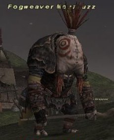

Level 75 reference · Zenith rules
|
Job: Black Mage |
 Image source |


|
Zone |
Level |
Drops |
Steal |
Spawns |
Notes | ||||||
|
14 |
1 |
A, L, S, Sc | |||||||||
|
HP = Detects Low HP; M = Detects Magic; Sc = Follows by Scent; T(S) = True-sight; T(H) = True-hearing JA = Detects job abilities; WS = Detects weaponskills; Z(D) = Asleep in Daytime; Z(N) = Asleep at Nighttime | |||||||||||
Notes:
- Alternates spawns with Bloody Vrukwuk around H-7.
- Fogweaver Mozzfuzz does still exist in the .dat files and has been seen periodically from 2004 through 2007. Its spawning cycle is unknown, but appears to be extremely long or irregular.
- Follows Warchief Vatgit.
- Despawns after Warchief Vatgit is defeated if you don't link or otherwise aggro him (difficult because he's always right behind the Warchief - try to one-shot him). Bloody Vrukwuk will appear with Vatgit the next time he spawns.
Adapted from Eden Wiki: Fogweaver Mozzfuzz · Contributors and history · CC BY-SA 4.0. Revision 1427. Layout, links and optional background text adapted for Zenith.